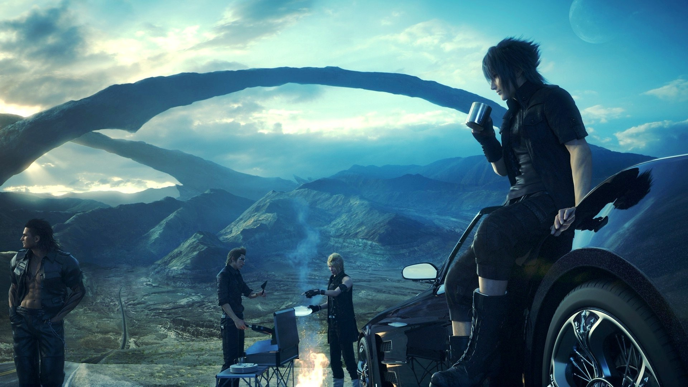

Template
Final Fantasy XV
Rating: 8.2
Final Fantasy XV opens, quite fittingly, with a splash screen that reads: “A Final Fantasy for fans and first-timers.” Having played every numbered entry since the first, I can see both reverence for the old and a courtship of the new in this latest chapter. I’d like to say it’s an elegant fusion of the two, but in reality it’s more of a duality - a conflict that reaches into nearly every aspect of Final Fantasy XV. In the end, its beauty, charm, and commitment to the bond between its four protagonists keep it glued together, even when some of its design and story elements threaten to pull it apart.
Prince Noctis and fellow travelers Gladiolus, Ignis, and Prompto aren’t a loosely assembled band of strangers uniting to face evil, like in so many other roleplaying games - they are close, long-time friends, and it’s this closeness that gives Final Fantasy XV’s often incoherent story all the heart it has. While the danger that befalls the land of Lucis never truly materializes until the end of the tale and the would-be romantic element of the story never gets more than a handful of weepy, insubstantial cutscenes, the mutual respect, understanding, and kinship of these four is fleshed out and reinforced beautifully whether in combat, on the road, or everywhere in between.
Fully real-time combat is the single biggest departure from the turn-based systems of the past, and while it doesn’t feel like the other main-line Final Fantasy games in any regard, the way it makes you and your three AI-controlled compatriots feel like a cohesive fighting unit kept it mostly enjoyable for me. Well-placed flanking strikes are rewarded with big damage and slickly animated team-up attacks, and commanding one of your buds to use one of their stylish-looking special attacks at just the right moment can be a literal blast. Especially here, the banter flies as they cheer each other on and pick one another up when they fall. They turn monster-slaying into family bonding time, and I love it.
Brothers In Arms
It certainly doesn’t hurt that they’re all exceedingly competent in battle. Assuming you keep their gear up to date and you aren’t poking things too many levels above you with a pointy stick, they’ll generally notch almost as many kills as you will, which is great when taking on medium- to large-sized groups. They switch between whatever spells and weapons they have equipped fairly intelligently, and even swoop in to get you on your feet if you’re incapacitated. Though Noctis is more well-rounded statistically (and can wield any weapon type), his three wards feel more or less like his equals. That their usefulness makes battles look like Avengers-style swirling melees isn’t the only upshot, either; it also makes them feel vital, further reinforcing the themes of closeness and brotherhood that make up the backbone of the story.
While the visual and thematic payoffs are big, the actual mechanics of battle are sadly quite thin. Holding circle performs a continuous combo string on whatever is closest, and holding square allows you to dodge or block nearly all attacks from any direction as long as your mana holds out. This can turn combat into a fairly passive experience at times, though Noctis’ teleportation abilities do make things slightly more interesting. Warping up to a distant cliffside to catch your breath and then blindsiding your target with a huge warp strike that sends them tumbling to the ground certainly looks and feels great, as do the wide array of cool-looking parry animations for countering specific enemy attacks.
But such cliffsides are always expressly designated and marked with a nice shiny icon as a place for you to do exactly that, and parrying those attacks is a simple matter of following big flashing button prompts with extremely generous timing windows on them. In this way, Final Fantasy XV regularly packages and serves you these impressive-looking combat moments rather than having you truly earn them dynamically, which kept me from ever really feeling like Noctis’ power was my own.
It’s not so strange for melee combat to be straightforward in a Final Fantasy game, where tactical variety typically comes in the form of a diverse set of magical abilities and/or Summon spells. However, it’s in these categories where Final Fantasy XV’s combat is weakest, largely because of all of the limitations placed on their use.
Spells are both tied to a cooldown period and are limited-use consumables that need to be replenished by absorbing elemental energy from designated deposits and enemies - not completely unlike the much-maligned Draw system of Final Fantasy VIII. Even worse, spell variety is downright anemic, with only the most basic black magic stalwarts of Fire, Ice, and Thunder (and their second and third rank equivalents) making the cut. An odd spellcrafting system allows you to make small tweaks, like a fire spell that heals the caster, or an ice spell that poisons the target, but such effects are usually secondary and comparatively limited in magnitude. Fortunately, what magic lacks in variety, it generally makes up in overall usefulness thanks to the devastating amounts of damage it’s capable of dealing.
Speaking of mass devastation, it wouldn’t be a Final Fantasy without Summon spells, and Final Fantasy XV’s are positively spectacular-looking. These are traditionally the biggest guns in your arsenal, and it’s no different here. I have yet to see a fight that a Summon can’t end in jaw-dropping fashion, but disappointingly, that’s only happened a mere handful of times for me. You won’t acquire your first Summon until deep into the 40-hour journey, and even once you do, you cannot call them in at will. Even after playing all the way through and getting some hints from Square Enix on how to trigger them, the exact method still eludes me. The secret seems to be a random mix of how badly hurt my party is, how badly hurt my enemies are, and how long I’ve been fighting for. This unpredictable nature kept them from adding any extra element of tactical choice to the action, but the upside is that every time I got to call one in it felt special and rare.
This minimized role of magic hurts, though, seeing as how the melee elements don’t provide a lot of interesting decisions to make or techniques to master, unless you count wrestling with the occassionally unruly camera. Especially in enclosed spaces, and even during some climactic boss fights, the camera becomes your biggest enemy, sometimes completely obscuring the action from you, which can be frustrating. That all said though, the promise of gorging my retinas on more eye candy and watching these four bond ‘n’ battle like better-dressed versions of the Teenage Mutant Ninja Turtles kept me looking forward to my next scrap.
The Open Road
The open world of Lucis is huge, and its towering geographic features and sweeping, wide-open plains give it a rare sense of scale. Though exploring it was easily my favorite part of Final Fantasy XV, the logistics of getting around take some getting used to at first. There’s actually a fair bit to learn if you want to travel safely and efficiently. Time is constantly flowing, and traveling at night, even by car, is dangerous. You’ll need to think about keeping your ride fueled up, paying for chocobo rentals for long off-road trips where your car can’t go, where to spend the night, and even what to eat. Though initially inconvenient, these extra steps do make the simple act of getting from point A to B feel like an actual trip. There are fast-travel options between previously explored points, but generally you have to actually make each journey at least once. This deliberate, regimented structure really drew me into the world, and also gave the relationships between the characters time to develop in innumerable little ways.
I know Ignis’ favorite brand of coffee and why he doesn’t mind doing all the driving and cooking. I know Gladiolus’ favorite food and that despite his gruff, aggressive demeanor, he likes to pull out a book and quietly read during long drives. I can tell you for sure that Prompto hates bugs but loves chocobos, which he sometimes sings about for no apparent reason at all. These details aren’t connected to events in the plot, either; just observations I’ve made from hours of car rides, long walks, and meals shared. I can’t remember the last group of video game characters I could speak about with this level of familiarity, and it’s because Final Fantasy XV turns every aspect of this travel routine into an opportunity to showcase their personalities.
But there’s more than just bromance on the open road. There are tons of side missions to participate in, including plenty that have a higher level requirement than the final leg of the main story (which means you’ll have plenty to do post-game). The search for some optional weapons for Noctis led to hidden dungeons and some of the best boss fights, though some of the higher-level hunting missions feature baddies that give even those bosses a run for their money. If all the traveling and fighting is getting to be too much you can just do some chocobo races, bet on monster fights at the arena, or (my favorite) fish the day away in pursuit of the perfect catch. It’s all a little spread out, but between the banter, the vistas, the combat, and the side activities, I was always engaged in one way or another.
It’s just a shame that the story more or less washes its hands of the open world for most of its second half. You can return to it pretty much whenever you’d like to, but narratively, it’s dropped in favor of a series of one-off areas that are extremely linear and generally less interesting than what I’d been doing in the first half. One particularly painful section temporarily strips Noctis of his friends, his powers, and his gear, forcing him down narrow corridor after narrow corridor for almost two hours.
Here especially, Final Fantasy XV feels like two different games: one for seasoned adventurers with wanderlust in their heart, and another for people who want tight levels and scripted action scenes. Sure, I could have gone back to the open world to take a breather when I needed to, but I don’t want to have to choose between advancing the story and having fun – but a decision that Final Fantasy XV’s back third had me constantly making.
That isn’t to say it’s all downhill once Lucis is in your rear-view though. One chapter is spent in a stunning city at sea, featuring a full, Venice-like gondola system and some truly breathtaking views. Another had Noctis warping in mid-air from dropship to dropship in an attempt to repel an Imperial onslaught, and the final hours of the journey brought more than one memorable boss fight as well as a great emotional payoff for Noctis and friends. While some parts of Final Fantasy XV’s procession of linear experiences are infuriating, many of them are memorable in their own right. I just wish I hadn’t been pulled away from the open world to experience them.
All The Small Things
There are so many things, both big and small, that give this series its own distinct flavor, and for all the ways that Final Fantasy XV diverges from the established ideas of its numbered predecessors, it also pays loving homage to its lineage - and it does so with alluring warmth and panache.
Part of this can certainly be chalked up to the generous dollops of fan service Square Enix has spooned over the entire experience. You can collect and listen to the soundtracks of every Final Fantasy ever, 16-bit portraits of your party members raise their hands in approval as you browse the wares in a weapon shop, and Prompto sometimes belts out an acapella version of the old Final Fantasy victory music like a 10-year-old singing along to his favorite musical. There are oddly expensive curios hidden away in select item shops that you just know are going to be part of some silly hidden quest, and of course there are fully fleshed-out mini-games that you can lose hours to before you know it. It’s all just so quintessentially Final Fantasy-esque – you know, there’s always a Cid, there’s always crystal, and all of that.
But Final Fantasy XV’s charm comes in plenty of flavors besides nostalgia too. Its various well-realized cities range from sleepy coastal factory towns to opulent Euro-chic metropoli, and they’re flush with back alleys, street vendors, locals buzzing about how their wife just got a promotion, and tourists fawning over the delicious local fare. The many rest stops and outposts in between smack oddly of 1950s middle-Americana, complete with family-style chain diners that serve exactly the kind of food you’d expect, and family-owned motels of questionable health standards.
All of this stands in stark contrast to the high/techno-fantasy motifs that modern Final Fantasy games are known for, a look represented here mostly through the brief glimpses we get of the capital cities of the story’s two warring factions. Little slices of it intermingle with the pervasive rustic trappings, though. Sleek, menacing Imperial dropships look practically alien as they cast their shadows across abandoned ramshackle farmhouses, and your car, aptly named the Regalia, is a stark symbol of the relative privilege and power Noctis is a product of. Though the story never leverages these visual themes, the way they mirror the rural/urban dichotomy of many developed, real-world countries made the realm of Lucis all the more real for me.
Further solidifying this sense of immersion is the technical and artistic prowess that brings it all to life. Never compromising in either scale or detail, Final Fantasy XV is constantly and thoroughly beautiful. Long draw distances and well-tempered daytime lighting make the open plains of Lucis feel airy and vibrant, but not at the expense of texture quality. Spell and hit effects are polished to a high sheen, and even the most basic of low-level enemy fodder are bristling with little details to pick out. It becomes especially apparent when playing with a PS4 Pro in high-resolution mode on a 4K TV. Pro owners without a 4K set can opt for standard resolution, which will look comparable to a regular PS4 but runs just slightly smoother. No matter your setup, though, seeing Iron Giants, Behemoths, and Chocobos at this level of fidelity is a huge treat.
The Verdict
When I’m riding chocobos across the beach at dusk with my three friends and hunting iconic Final Fantasy monsters in a huge, picturesque open world, Final Fantasy XV feels like nearly everything I could want from a modern Final Fantasy. But when it funnels me into linear scenarios and drab, constricted spaces that plunge the simplistic combat into chaos, my blood boils a bit. There is so much good here, so much heart - especially in the relationships between Noctis and his sworn brothers. It just comes with some changes and compromises that were, at times, difficult for this long-time Final Fantasy fan to come to grips with.